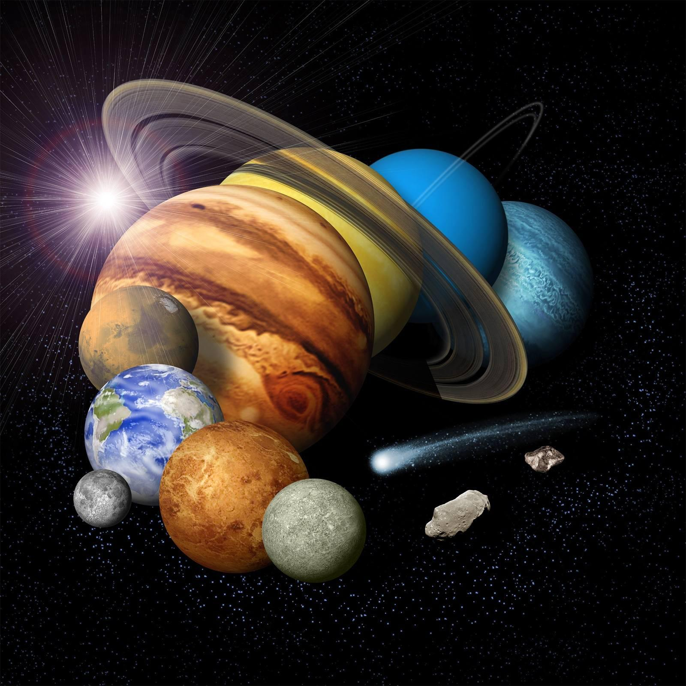

The Solar System is the gravitationally bound system centered on the Sun, comprising eight planets, five officially recognized dwarf planets, hundreds of moons, millions of asteroids, and billions of comets. The system formed approximately 4.6 billion years ago when a portion of a giant molecular cloud collapsed under its own gravity. According to the nebular hypothesis, this collapsing cloud flattened into a protoplanetary disk, with material concentrated at the center forming the Sun while remaining material accreted into increasingly larger bodies.

Credit: NASA/JPL-Caltech
Mass distribution
The Sun contains 99.86% of the Solar System's total mass. The remaining mass is distributed among the planets, which together comprise less than 0.14% of the system. The giant planets dominate the non-stellar mass, with Jupiter and Saturn alone accounting for roughly 90%.
Terrestrial planets
The four inner planets—Mercury, Venus, Earth, and Mars—are rocky, terrestrial bodies with solid surfaces and high densities. These planets orbit closest to the Sun within the first 1.5 AU and have few natural moons. Mercury is the smallest and nearest to the Sun, while Venus has the highest surface temperature at 464°C, driven by a thick carbon dioxide atmosphere.
Giant planets
The four outer planets lack solid surfaces but display complex atmospheric systems above rocky or icy cores. The gas giants Jupiter and Saturn consist primarily of hydrogen and helium and feature prominent ring systems. The ice giants Uranus and Neptune contain solid cores surrounded by mantles of water, methane, and ammonia ices.
Asteroid belt and dwarf planets
A torus-shaped region between Mars and Jupiter orbits at 2.06 to 3.3–4.2 AU from the Sun. The asteroid belt contains millions of asteroids classified as carbonaceous (comprising over 75% of visible asteroids), silicate, or metal-rich types. Five officially recognized dwarf planets exist: Ceres in the asteroid belt, and Pluto, Eris, Haumea, and Makemake in the outer Solar System. Pluto was reclassified from planetary to dwarf-planet status in 2006 when the International Astronomical Union established that planets must clear their orbital neighborhoods.
Kuiper Belt and Oort Cloud
Beyond Neptune at 30 AU extends the Kuiper Belt, a circumstellar disc of icy bodies reaching to approximately 50 AU. Objects in this region consist of frozen materials including methane, ammonia, and water ice. The theoretical Oort Cloud forms a spherical shell surrounding the Solar System at distances of 2,000 to 200,000 AU, marking the gravitational boundary where the Sun's influence yields to galactic tidal forces. The Oort Cloud contains billions of icy planetesimals that serve as the source of long-period comets.
Galactic context
The Solar System orbits the galactic center of the Milky Way at a velocity of approximately 515,000 miles per hour, requiring roughly 230 million years to complete one full orbit. The nearest star, Proxima Centauri, lies 4.25 light-years away. The Solar System resides in a minor spiral arm of the Milky Way known as the Orion Arm.